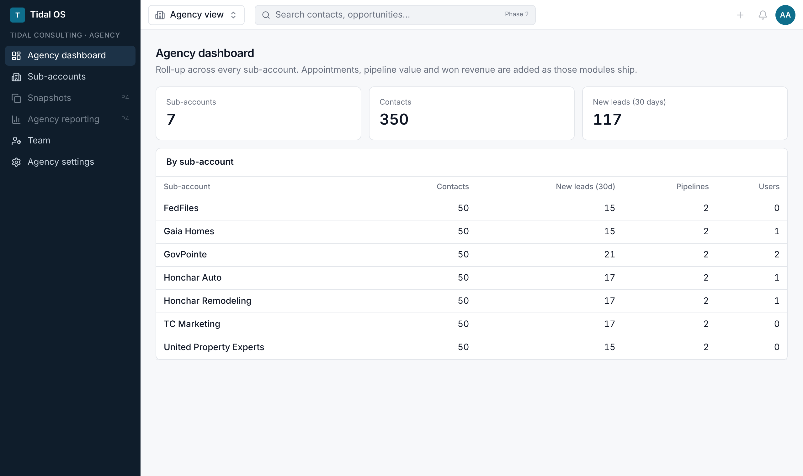
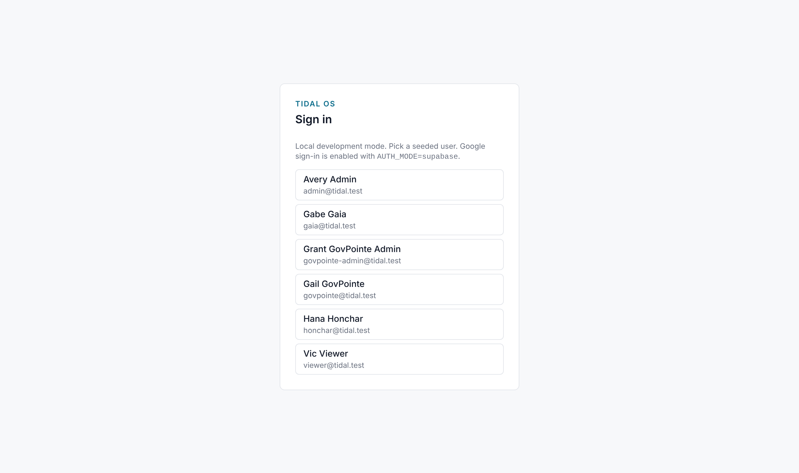
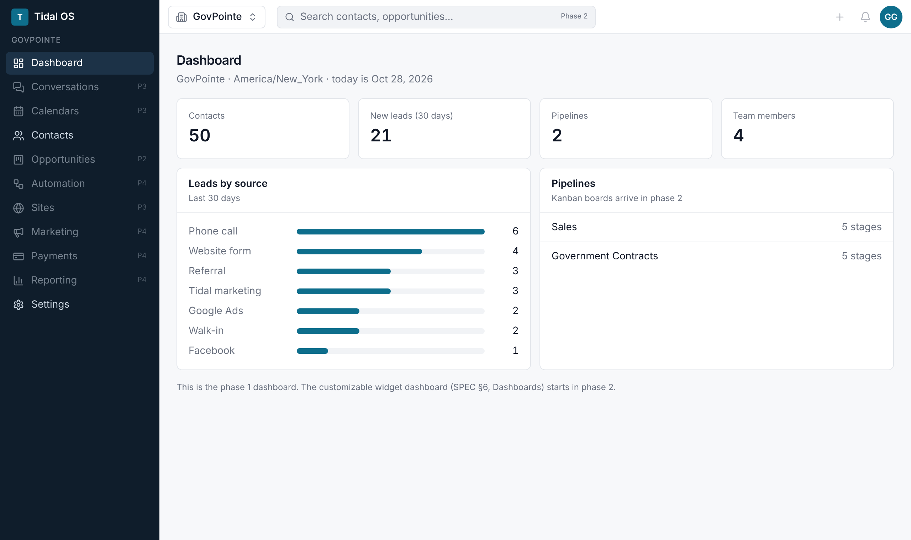
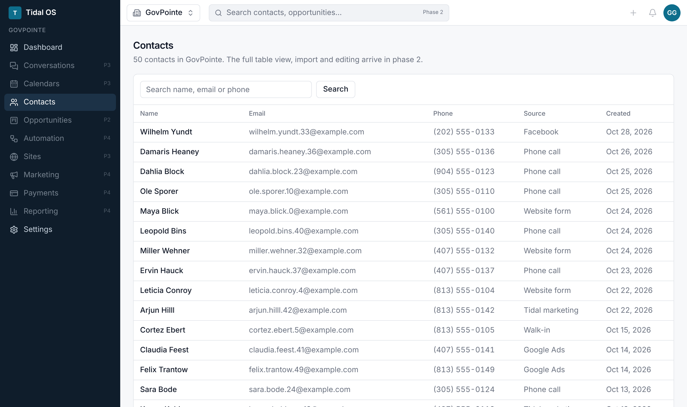
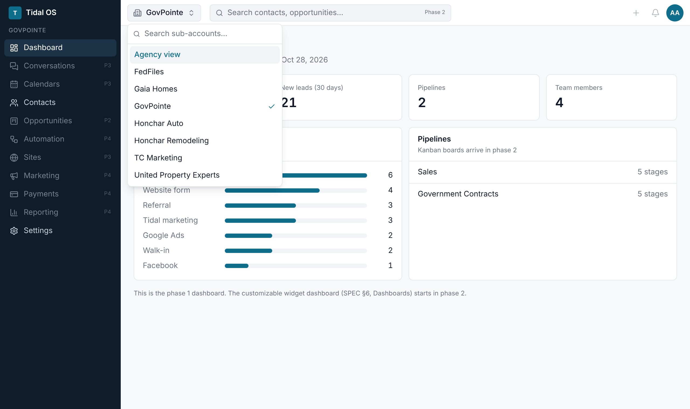
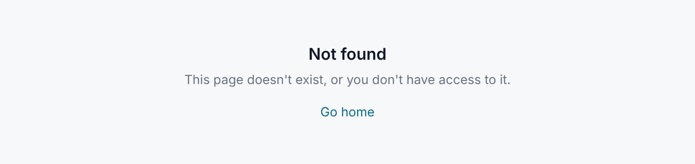
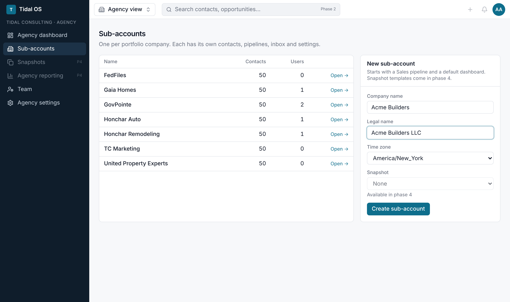
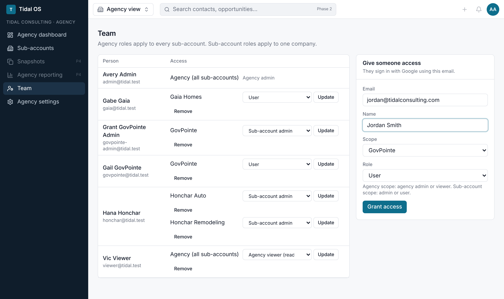
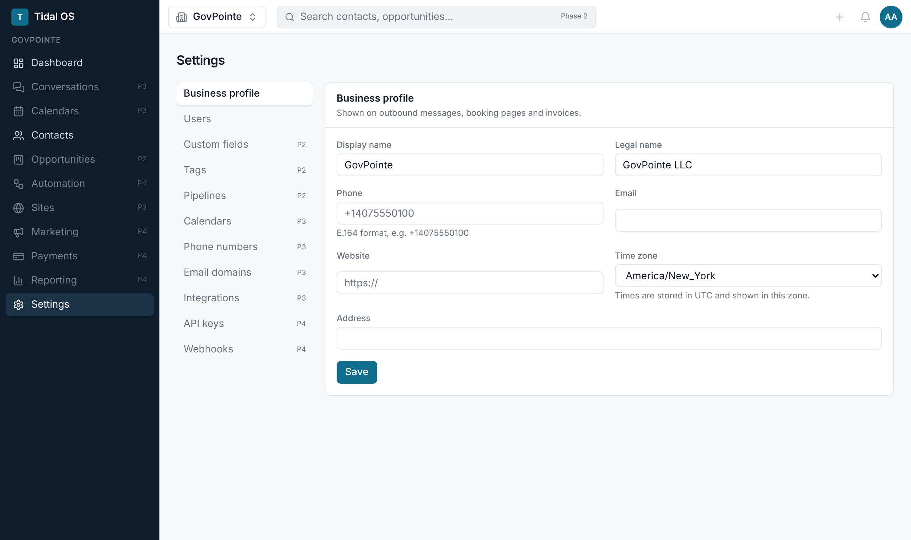
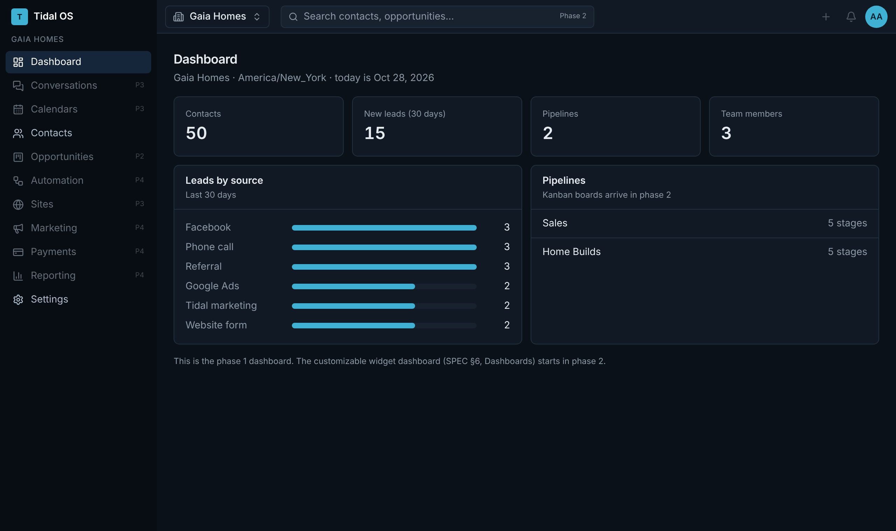

How to run the Tidal Consulting CRM on your own computer, step by step, with a short tour of what Phase 1 can do.

Tidal OS is the internal, GoHighLevel-style CRM. Tidal Consulting is the agency, and each portfolio company (GovPointe, Gaia Homes, Honchar Auto, Honchar Remodeling, United Property Experts, FedFiles, TC Marketing) is a sub-account with its own data.
This guide runs the app locally, on your own computer, with a local database full of sample data. Nothing is on the internet yet. Hosting (Vercel + Supabase) and Google sign-in come once the team decides on hosting.
P2–P4 in the sidebar are placeholders for later phases..env$ and press Return. Don't type the $ itself.You only do this once per computer. If you already have a tool, check its version and skip it.
Downloads the code. On a Mac it's installed the first time you run git: macOS offers to install the "Command Line Developer Tools". Click Install. On Windows/WSL: sudo apt install git.
Runs the app. Download the 22.x LTS installer from nodejs.org and run it. Phase 1 was built and tested on Node 22.
Installs the app's building blocks. Node ships with a helper that turns it on:
If that says "command not found", use npm install -g pnpm@10 instead.
Runs the database. Download it from docker.com, install it, and open it once so it's running (whale icon in the menu bar). On Windows, turn on "Use WSL 2" in its settings.
Any version numbers at or above these are fine. If a command says "not found", reinstall that tool and open a new terminal window.
The repository is private, so you need access to TidalConsulting/tidal-crm on GitHub. Phase 1 is on a review branch until it's merged, so check that branch out:
If GitHub asks you to sign in, use your GitHub account. Once Phase 1 is merged, you can skip the git checkout line.
With Docker Desktop running, from inside the tidal-crm folder:
This starts PostgreSQL 16 in the background with two databases: tidal for the app and tidal_test for the automated tests. Your data survives restarts.
Copy the example file, then generate a random secret for signing people in:
Open .env in any text editor (on a Mac: open -e .env). Replace change-me-to-a-long-random-string on the SESSION_SECRET line with the characters you just generated, and save. Leave everything else as it is.
.env privateIt's never uploaded to GitHub (it's in .gitignore). AUTH_MODE=dev means "sign in by picking a test user". It only works on your computer, and the app refuses it on a production server.The first run downloads a few hundred megabytes and takes a minute or two. You may see "deprecated" or "Ignored build scripts" warnings. Those are harmless.
This creates every table and the security rules that keep each company's data separate. It then loads the agency, the 7 companies, two pipelines and 50 fake contacts per company, and 6 test users.
These 40 checks include the Phase 1 acceptance test: a GovPointe user cannot see, add to, change or delete Gaia Homes data. They only touch the separate test database.
Leave this terminal window open while you use the app. Then open http://localhost:3000 in Chrome, Safari or Edge.
The sign-in page lists the sample users. Each one has a different level of access, so you can see the app the way each kind of person will:

The local sign-in page. Once Google sign-in is turned on, this becomes a single "Continue with Google" button.
| Sign in as | Can see | Can do |
|---|---|---|
Avery Adminadmin@tidal.test | Every company + agency view | Everything: create companies, manage the team |
Vic Viewerviewer@tidal.test | Every company + agency view | Read only |
| Grant GovPointe Admin | GovPointe only | Edit GovPointe's profile and users |
| Gail GovPointe | GovPointe only | Day-to-day work in GovPointe |
| Gabe Gaia | Gaia Homes only | Day-to-day work in Gaia Homes |
| Hana Honchar | Honchar Auto + Honchar Remodeling | Admin of both |
To switch users, click your initials in the top-right corner and choose Sign out.
After signing in you land on your company's dashboard: contact count, new leads in the last 30 days, leads by source, and that company's pipelines. The sidebar follows the GoHighLevel layout. Grey items marked P2–P4 arrive in later phases.

Signed in as Gail GovPointe. The fully customizable widget dashboard starts in Phase 2.
A searchable, paged list of the company's contacts. Search by name, email or phone. Adding, editing and CSV import arrive in Phase 2.

50 sample contacts in GovPointe. Phone numbers are stored in international format and shown US-style.
Sign in as Avery Admin. Click the company name at the top left, type to search, and press Return. You stay on the same screen (Contacts stays Contacts) for the new company, and the app remembers your choice for next time. Pick Agency view to see all companies at once.

The sub-account switcher. People only see the companies they have access to.
Signed in as Gail GovPointe, open a Gaia Homes page (for example by pasting a Gaia link an admin sent you). You get "Not found". The database itself refuses to return another company's records, so this protection doesn't rely on the screens being built correctly.

A GovPointe user trying to open Gaia Homes' contacts.
For agency admins and viewers: totals across every company, and a row per company. Click a company name to jump into it.
Appointments, pipeline value and revenue join this roll-up as those modules ship.
Agency view → Sub-accounts. Fill in the company name (legal name and time zone are optional) and click Create sub-account. It's ready right away, with a Sales pipeline and a dashboard. From the company's page you can also edit its details or Archive it (its data is kept).

Creating a new company takes under a minute. Templates ("snapshots") arrive in Phase 4.
Agency view → Team. Enter their email, choose a Scope (the whole agency, or one company) and a Role, then click Grant access. Change or remove access from the list on the left. Company admins can do the same for their own company under Settings → Users.

Agency roles cover every company. Company roles cover one. Once Google sign-in is on, people sign in with the email you entered here.
| Role | Scope | Meaning |
|---|---|---|
| Agency admin | All companies | Full control, including creating companies and managing the team |
| Agency viewer | All companies | Can look at everything, can't change anything |
| Sub-account admin | One company | Runs that company: settings, users, pipelines |
| User | One company | Day-to-day work: contacts, and later inbox and deals |
Settings → Business profile holds the company's display and legal name, phone, email, website, address and time zone. All times in that company are shown in its time zone. Only admins can save changes. Everyone else sees the form read-only.

The other settings pages (custom fields, tags, phone numbers, API keys…) are placeholders labelled with their phase.
Click your initials (top right) and choose light, dark or system.

| I want to… | Do this |
|---|---|
| Stop the app | In the terminal running pnpm dev, press Ctrl + C. |
| Stop the database | docker compose stop (your data is kept) |
| Start again later | Open Docker Desktop, then in the tidal-crm folder:docker compose up -d then pnpm dev |
| Get the latest code | git pull, then pnpm install, then pnpm db:migrate |
| Start over with clean sample data | pnpm db:resetThis erases everything in the local database, including companies and users you added. |
| Run the automated checks | pnpm test (uses the separate test database, never your data) |
| You see | Fix |
|---|---|
Cannot connect to the Docker daemon | Docker Desktop isn't running. Open it, wait for the whale icon to settle, and try again. |
port is already allocated / 5432 in use | Another PostgreSQL is already running on your computer. Stop it (Mac: quit Postgres.app, or brew services stop postgresql), then run docker compose up -d again. |
DATABASE_URL is not set | The .env file is missing from the tidal-crm folder. Redo step 8. |
SESSION_SECRET must be set to at least 32 characters | The secret in .env wasn't replaced or is too short. Redo step 8. |
ECONNREFUSED 127.0.0.1:5432 | The database isn't running. Run docker compose up -d. |
| Sign-in page says "No users yet" | Run pnpm db:reset (step 10). |
Port 3000 is in use | The app is already running in another terminal window. Use that one, or close it. |
pnpm: command not found | Run corepack enable or npm install -g pnpm@10, then open a new terminal. |
| Anything else | Copy the full error text from the terminal and send it to whoever is building the app (or paste it into Claude Code). |
git clone … + git checkout claude/epic-brown-qqamhcdocker compose up -dcp .env.example .env + set SESSION_SECRETpnpm installpnpm db:resetpnpm dev → open localhost:3000